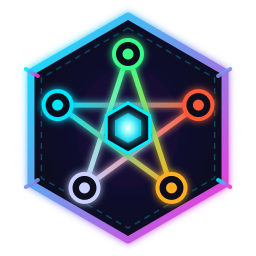

Support
Neon Wardens · cyberpunk tower defense
Contact
Found a bug, stuck on a map, or have an idea? Get in touch:
- Email: lonelystar1404@gmail.com
- Report an issue: github.com/lonelystar1404/Tower-Defense/issues
For bugs, please include your device (e.g. iPhone 15, iPad Air), iOS or browser version, the map and wave, and what happened. A screenshot helps a lot.
How to play
- Build: pick an element (Fire, Water, Wood, Earth, Metal) and a weapon, then tap an empty pad to preview the tower and its range. Tap the same pad again to build. On a computer, one click builds.
- Upgrade or sell: tap a tower. Selling refunds 70% of what you spent.
- Start a wave: press Ready. Between waves a 30-second countdown starts the next wave on its own.
- Heroes (from map 3): tap your hero, then tap the map to move. A long press anywhere also moves the hero there. Tap an ability; aimed abilities need a tap on the map, then a second tap on the same spot to fire.
- Cancel: the Cancel button over the map, or a long press.
- Elements follow a cycle: Water beats Fire, Fire beats Metal, Metal beats Wood, Wood beats Earth, Earth beats Water. Matching the right element to an enemy deals +50% damage.
- Lockdown: from map 2, some towers are "encrypted" each wave and can't be built or upgraded. The green numbers on the elements show how many are available.
Score
Each map keeps score: 100 points per wave cleared, up to 100 more for clearing it quickly after its last enemy appears, and −50 for every life lost. Your best score on each map is shown on the map select screen.
Common questions
Is my progress saved?
Yes, on your device. Your run is saved after every wave you clear, and when you leave the app between waves. If you leave during a wave, that wave starts over when you come back. Cleared maps, best scores, and settings are kept too. Progress is not synced between devices.
How do I start over?
To replay a map, use ↻ in the top bar or New run on the map card. To erase all progress, delete and reinstall the app (iOS) or clear this site's data in your browser (web).
How do I unlock the next map?
Clear the previous one. The second team of heroes unlocks after clearing Core Nexus, the last map.
There's no sound.
Sound starts after your first tap. Check the speaker button at the top right of the game, and your device volume.
Can I play in another language?
Yes: English, Español, 中文, and Tiếng Việt, from the language menu in the top bar.
Does the game collect my data?
No. See the Privacy Policy.